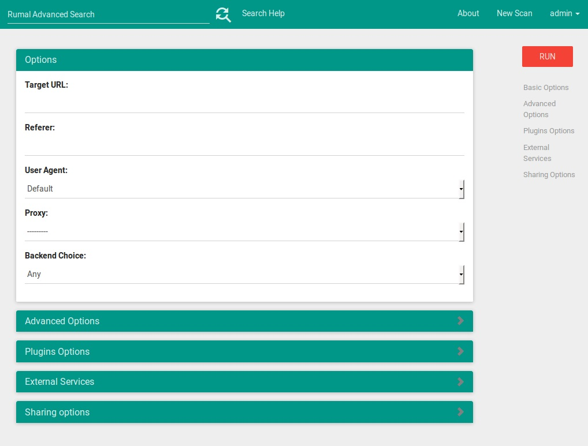
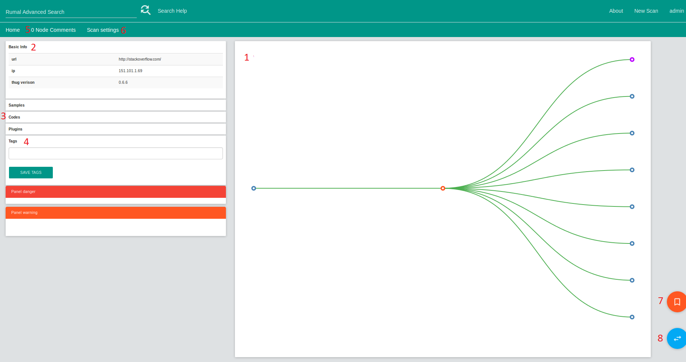
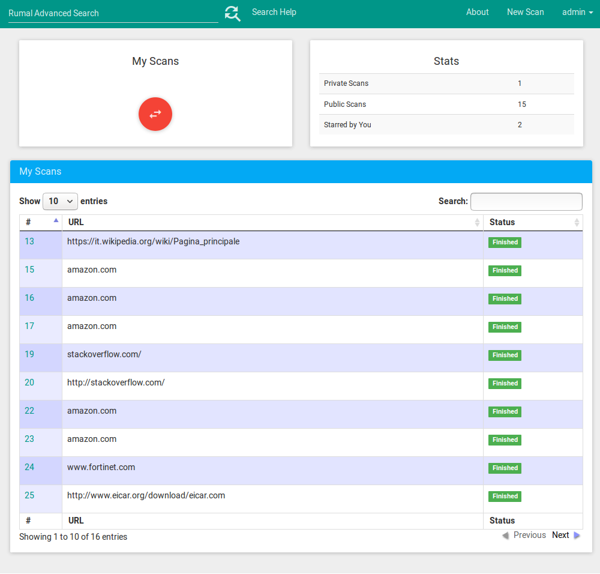

Quickstart¶
Running First Scan¶
- Start the frontend and backend server as per Installation.
- Enter the frontend daemon URL in the browser.
- Login using the super-admin credentials.
- Click on new scan button and enter the details.
Scan Fields¶
These fields refer to the options provided in Thug, details can be found here.
Options:
Target URL url to scan (url in Thug)
Referrer -r in Thug specifying a referrer
User Agent -u in Thug select a user agent from list
Proxy -p in Thug specify a proxy (currently noy supported)
Backend Choice backend to run the scan on or any.
Advanced Options:
Specified Dom events handling -e in Thug
Maximum setTimout/setInterval delay (ms) -w in Thug
Analysis timeout (s) -T in Thug
Maximum pages to fetch -t in Thug
Disable local web cache -m in Thug
Verbose mode -v in Thug
Quiet (disable console logging) -q in Thug
Debug mode -d in Thug
AST debug mode (requires Debug mode) -a in Thug
HTTP debug mode -g in Thug
Extensive fetch on linked pages -E in Thug
Broken URL mode -B in Thug
Plugin Options:
Adobe Acrobat Reader version (default: 9.1.0) -A in Thug, specify the Adobe Acrobat Reader version
Disable Adobe Acrobat Reader plugin -P in Thug, disable Adobe Acrobat Reader plugin
Shockwave Flash version (default: 10.0.64.0) -S in Thug, specify the Shockwave Flash version
Disable Shockwave Flash plugin -R in Thug, disable Shockwave Flash plugin
Java plugin version (default: 1.6.0.32) -J in Thug, specify the JavaPlugin version
Enable/ Disable Java plugin -K in Thug, disable Java plugin
External Services:
Query VirusTotal for samples -y in Thug, query VirusTotal for samples analysis
Submit samples to VirusTotal -b in Thug, submit samples to VirusTotal
Disable HoneyAgent support -N in Thug, disable HoneyAgent support
Understanding the Results¶
- 1: Panel that displays the scan tree produced by Thug. The orange node is the currently selected node, purple nodes can be double clicked to expand while blue nodes are leafs of the tree. Nodes can be selected by clicking on then. This panel is also used for the GeoPlugin to display location of IPs can be switched via the 8 button.
- 2: Basic information panel that gives the url and IP address of the currently selected node.
- 3: Samples, Codes and Plugins panels that contain data returned by Thug. These panels only display their data when hovered over by the mouse.
- 4: Tags are used to give single words or short text information describing a scan. This can help users identify key aspects of a scan. Suggestions are given to the user when typing a tag with all existing tags. For public scans, tags can be added by everyone. If a scan is shared within a group, all group members can add tags to a scan.
- 5: Commenting on a node. You can add comments on the currently selected node, just select you node and click on this tab to view and post comments. The number of comments is displayed. Only authorised users can post comments, within public scans everyone can post a comment. But when shared within a group, only group members have access to this feature.
- 6: This tab allows the owner of the scan to change the sharing model and shred groups options of a scan.
- 7: Bookmarking a scan. Displayed in My Scans
- 8: Switch to Geoplugin. Panel 1 changes to display a Map of all IPs present within the tree.
My Scans¶
Rumal also allows you to see all your previous scans. Previous scans are accessible by clicking on the MyScans tab. All your scans are displayed here as well as all your bookmarked scans.
JQuery DataTables is used for displaying list of scans (also used within groups pages and advanced searches). A useful feature of DataTables provides users with the ability to filter and search the list.
.